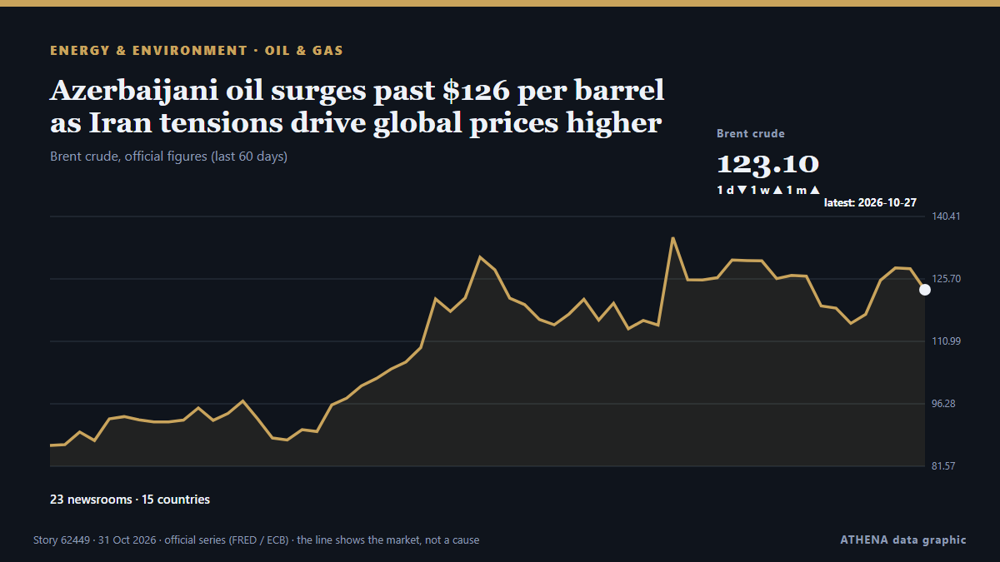

Azerbaijani oil surges past $126 per barrel as Iran tensions drive global prices higher

The price of Azerbaijan's Azeri Light crude oil has climbed to $126.16 per barrel in the European market, rising by $3.88, or 3.2%, amid renewed concerns over potential US military strikes against… από AzerNews
Αναφέρθηκε ανεξάρτητα από 23 μέσα σε 15 χώρες από τις 26 Οκτ, πρώτο από το Bank of Japan· η κάλυψη εξασθενεί. Το ATHENA εκτιμά τον κίνδυνο μέτριο (2.6/10), κυρίως λόγω της σοβαρότητας της βλάβης που περιγράφεται και της γεωγραφικής και τομεακής εμβέλειάς του. Η βεβαιότητα είναι 86% (υψηλή), καθώς το επιβεβαιώνουν 23 ανεξάρτητα μέσα με μέση αξιοπιστία πηγών 74%. Ποιοι το ανέφεραν: 5 μέσα στη χώρα Ηνωμένες Πολιτείες · United States, 4 μέσα στη χώρα Ηνωμένο Βασίλειο · United Kingdom, 4 μέσα στη χώρα Ινδία · India. Η κάλυψη διήρκεσε από 26 Οκτ έως 31 Οκτ, 104 ώρες.
Γιατί έχει σημασία: Η σελίδα παρακολουθεί τα γεγονότα πίσω από τις τιμές της ενέργειας — αποφάσεις του OPEC+, διακοπές εφοδιασμού, συγκρούσεις σε θαλάσσιους δρόμους και ζήτηση — όχι τις ίδιες τις τιμές.
Τι άλλαξε: 4 νέες αναφορές από 4 μέσα στο 24ωρο έως 31 Οκτ.
Πρώτη διατύπωση: Brazil Factory Prices Jump 4.34% in a Year
Οι τίτλοι των ειδήσεων παρουσιάζονται στα αγγλικά, όπως δημοσιεύτηκαν.
Με μια ματιά
Επιλέγεται, βαθμολογείται και γράφεται από τη δημοσιευμένη μεθοδολογία του ATHENA. Κανένας συντάκτης δεν παρεμβαίνει σε μεμονωμένα γεγονότα. Πώς παράγεται ›
| 26 Oct 23:50 UTC | 1 |
|---|---|
| 27 Oct 05:50 UTC | 0 |
| 27 Oct 11:50 UTC | 1 |
| 27 Oct 17:50 UTC | 1 |
| 27 Oct 23:50 UTC | 0 |
| 28 Oct 05:50 UTC | 0 |
| 28 Oct 11:50 UTC | 7 |
| 28 Oct 17:50 UTC | 3 |
| 28 Oct 23:50 UTC | 0 |
| 29 Oct 05:50 UTC | 1 |
| 29 Oct 11:50 UTC | 2 |
| 29 Oct 17:50 UTC | 2 |
| 29 Oct 23:50 UTC | 5 |
| 30 Oct 05:50 UTC | 4 |
| 30 Oct 11:50 UTC | 1 |
| 30 Oct 17:50 UTC | 0 |
| 30 Oct 23:50 UTC | 0 |
| 31 Oct 05:50 UTC | 1 |
| 30 Oct 03:06 UTC | 2.1 |
|---|---|
| 30 Oct 03:10 UTC | 2.7 |
| 31 Oct 08:19 UTC | 2.6 |
Γιατί αυτοί οι αριθμοί
Σημασία
Κίνδυνος
Βεβαιότητα
Η κάλυψη — ποιος το ανέφερε και πότε
ο τίτλος όπως δημοσιεύτηκε · ανοίγει το πρωτότυπο- Bank of Japan · Ιαπωνία · JapanServices Producer Price Index (Sept.)
- Central Banking · Ηνωμένο Βασίλειο · United KingdomOil discoveries drive persistent inflation increases – BIS paper
- Atlantic Council · Ηνωμένες Πολιτείες · United StatesHigh oil prices have several Latin American governments feeling the financial pressure
- OilPrice.com · Ηνωμένο Βασίλειο · United KingdomIran Eyes $130 Oil While at Least 50 Tankers Sit Stuck in the Gulf
- OilPrice.com · Ηνωμένο Βασίλειο · United KingdomChina’s Refiners Turn to Africa and Brazil Crude as Freight Rates Ease
- Times of India · Ινδία · IndiaFrom Brazil to Cuba, US turns up the heat
- OilPrice.com · Ηνωμένο Βασίλειο · United KingdomPetroChina Q3 Profit Jumps to $7.78 Billion
- gCaptain · Ηνωμένες Πολιτείες · United StatesScorpio Tankers Reports $181,000-a-Day LR2 Rates as Middle East War Upends Oil Trade
- Hindustan Times · Ινδία · IndiaCancer drug prices slashed for 543 brands, new rates effective from November 9
- The Straits Times · Σιγκαπούρη · SingaporeEuropean gas prices hit 100 euros for first time since 2022
- The Rio Times · Βραζιλία · BrazilBrazil Factory Prices Jump 4.34% in a Year
- Sydney Morning Herald · Αυστραλία · AustraliaTreasurer considers big infrastructure cuts
- The Rio Times · Βραζιλία · BrazilBrazil Industry Group Cuts Growth to 1.6%
- Indian Express · Ινδία · IndiaGovernment raises FY27 GDP forecast to 7.3%, flags risks from crude oil prices
- Fortune · Ηνωμένες Πολιτείες · United States‘The inflation outlook has become more concerning’: Incomes declined 0.3% and consumer prices jumped 3.6% in September as midterms loom
- PBS NewsHour · Ηνωμένες Πολιτείες · United StatesInflation heats up again, days before midterm elections
- The Jerusalem Post · Ισραήλ · IsraelGasoline prices to fall 42 agorot Sunday, defying forecasts of a jump to near-record levels
- FreightWaves · Ηνωμένες Πολιτείες · United StatesAmazon battles freight inflation as shipping costs jump 11% in Q3
- NewZimbabwe · Ζιμπάμπουε · ZimbabweNcube to review IMTT, sugar tax as MPs push for fuel prices below US$2 a litre
- Times of India · Ινδία · IndiaOil prices cross $115 per barrel as Houthi attacks on Saudi Arabia stoke supply fears
- Vanguard · Νιγηρία · NigeriaIt’s not how much we borrow, but what we build — Tinubu
- APA (English) · Αζερμπαϊτζάν · AzerbaijanAzerbaijani oil trades above $122 per barrel
- Business Recorder · Πακιστάν · PakistanGold slips as higher oil, US inflation data bolster Fed hike bets
- Shafaq News (English) · Ιράκ · IraqOil prices climb as Middle East conflict threatens supplies
- AzerNews · Αζερμπαϊτζάν · AzerbaijanGold prices fall below $4,000 per ounce amid rising inflation concerns
- Al Jazeera English · Κατάρ · QatarOil flows are up as Iran war turmoil eases. Why do prices keep rising?
- Greek Reporter · Ελλάδα · GreeceOil and Gas Prices Surge as Iran War Threatens Europe’s Winter Energy Supplies
- Shafaq News (English) · Ιράκ · IraqBrent tops $117, Gold falls 2%
- AzerNews · Αζερμπαϊτζάν · AzerbaijanAzerbaijani oil surges past $126 per barrel as Iran tensions drive global prices higher